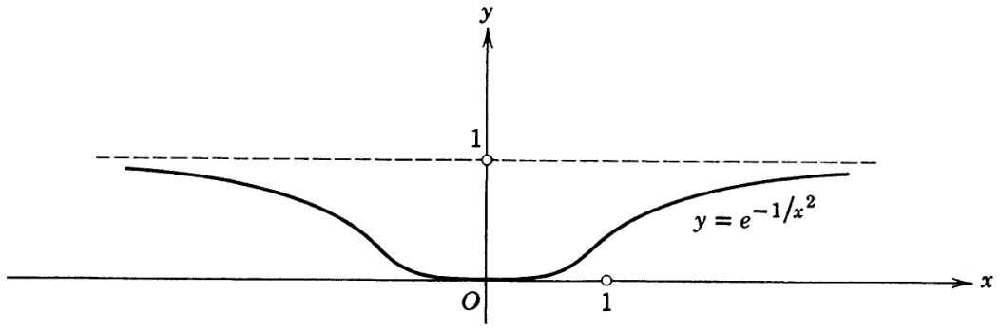
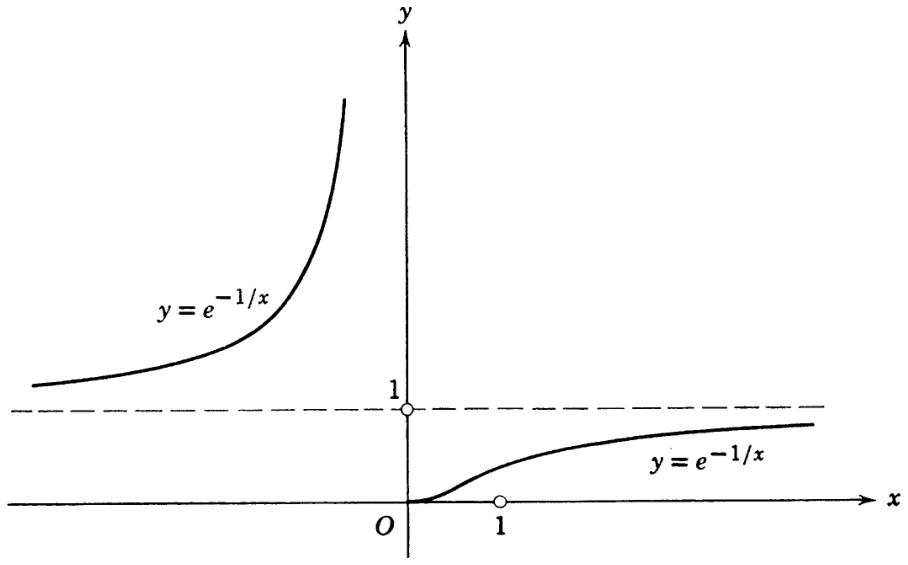
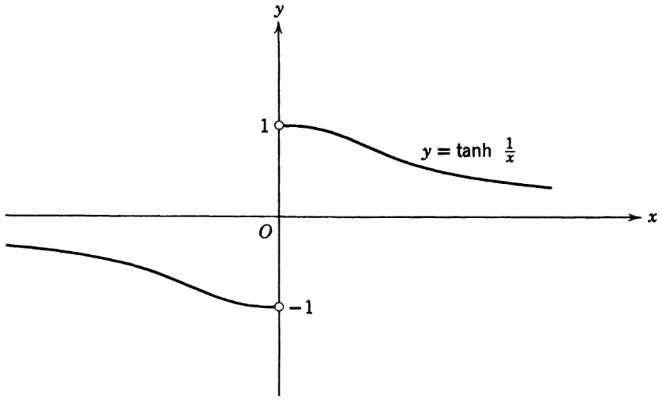
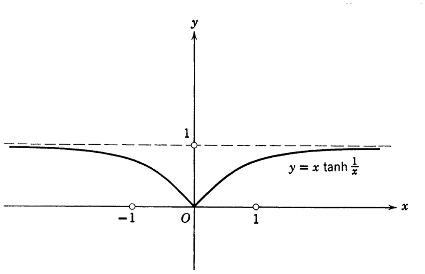

一般说来，要举这类例子，并不一定非用一个解析式来表示（参见原书所引第 38 页图 2.28 和第 39 页图 1.30）。不过，这里我们想用初等函数构成的极简单的表达式，说明几种典型的间断以及“反常”或出乎意料的现象。先看一个并没有间断的例子。
a. 函数 y=e−1/x2
这个函数（图 3.22）起初只对 x=0 有定义。显然，x→0 时它的极限为零，因为换元 1/x2=ξ 后，函数成为 y=e−ξ，而 limξ→∞e−ξ=0。因此，很自然地规定 y(0)=0，把函数连续地延拓到 x=0。
由链式法则，x=0 时导数为 y′=(2/x3)e−1/x2。依第 250 页的结果，x 趋于零时，这个导数也趋于零。在 x=0 处，导数本身由
y′(0)=h→0limhy(h)−y(0)=h→0limhe−1/h2得到，值也为零，因而导数在这里连续。

图 3.22
译者注 首段所引第 38 页的图按第一章的编号应为图 1.28。第 256 页的一阶导数原印作 −(2/x3)e−1/x2=2ξ3/2e−ξ。由 (−1/x2)′=2/x3，第一项应取正号；改用 ξ 表示时，还须区分 x 的正负。两侧导数的绝对值都是 2ξ3/2e−ξ，所以左右极限同为零。
在 x=0 时求高阶导数，显然总会得到 e−1/x2 与 1/x 的某个多项式的乘积。令 x→0，极限总是零。因此在 x=0，各阶导数也都像 y′ 一样为零。这个函数到处连续，可以求任意多次导数，在 x=0 处函数本身和一切导数都为零，却并不恒等于零。以后（第五章附录 I.1）将看到，这种表现是多么特殊，或者说“反常”。
b. 函数 y=e−1/x
对正的 x，很容易看出这个函数与上例表现相同。x 由正侧趋于零时，函数及各阶导数均趋于零。若规定 y(0)=0，那么在 x=0 处，各阶右导数都等于零。然而，x 由负侧趋于零时就完全不同了。此时函数及各阶导数都无界，在 x=0 没有左导数。因此，函数在 x=0 具有一种引人注目的间断，与第 36、37 页讨论的有理函数的无穷间断颇不相同（图 3.23）。

图 3.23
c. 函数 y=tanh(1/x)
第 65 页已经看到，简单函数经取极限可以产生有“跳跃”间断的函数。第 151 页定义的指数函数与函数的复合运算结合起来，又提供了另一种方法，可以直接从初等函数构造有跳跃间断的函数，无须再作极限过程。例如考察
y=tanhx1=e1/x+e−1/xe1/x−e−1/x在 x=0 附近的情形。函数起初在该点没有定义。若 x 从正侧趋于零，显然极限为 1；若从负侧趋于零，则极限为 −1。故 x=0 为跳跃间断点。随着 x 增大经过零，函数值跳过的幅度为 2（图 3.24）。另一方面，导数
y′=−cosh2(1/x)1x21=−x21(e1/x+e−1/x)24从两侧都趋于零，这可由 §3.7b 第 249 页的结果直接推出。¹

图 3.24
原注 1（第 258 页） x→0 时，函数 y=arctan(1/x) 是“跳跃”间断的另一例。
d. 函数 y=xtanh(1/x)
考察函数
y=xtanhx1=xe1/x+e−1/xe1/x−e−1/x.因子 x 消去了上例的间断。x 从任一侧趋于零时，函数的极限都是零，因而仍可适当地规定 y(0)=0。这样函数便在 x=0 处连续了。可是它的一阶导数
y′=tanhx1−x1cosh2(1/x)1恰好具有上例中函数本身的那种间断性。函数图像上有一个角点（图 3.25）。在 x=0，它没有通常意义下的导数，却有值为 +1 的右导数和值为 −1 的左导数。

图 3.25
e. 函数 y=xsin(1/x)，y(0)=0
我们已经看到，这个函数不能分成有限个单调部分，也就是说，它并不“分段单调”，但它仍然连续（第 40 页及图 1.31）。相反，它的一阶导数
y′=sinx1−x1cosx1(x=0)在 x=0 处有间断。x 趋于零时，这个导数不停地在两条界曲线之间振荡，其中一条为正，一条为负，分别趋于 +∞ 与 −∞。而在点 x=0 本身，差商 [y(h)−y(0)]/h=sin(1/h)。h→0 时这个式子在 1 和 −1 之间往复无穷多次，所以函数在 x=0 既没有右导数，也没有左导数。